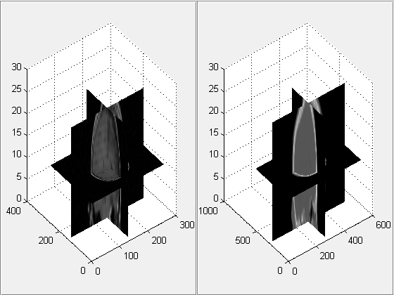
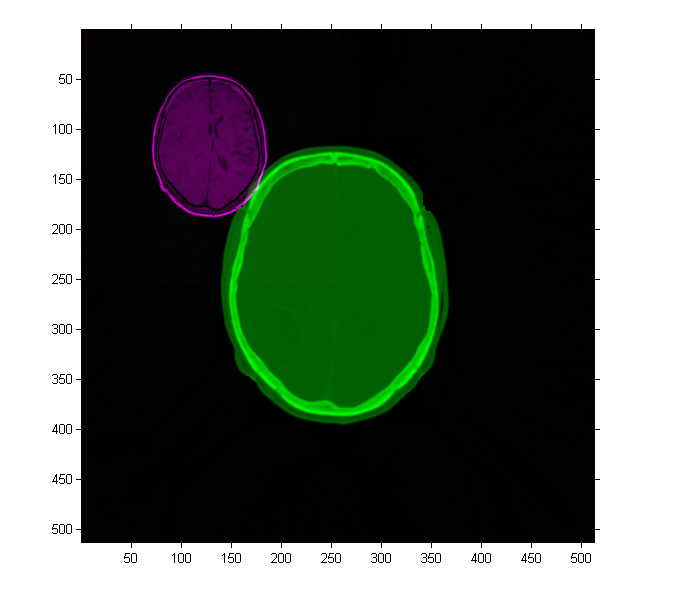
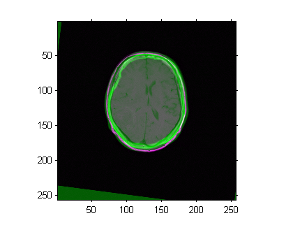
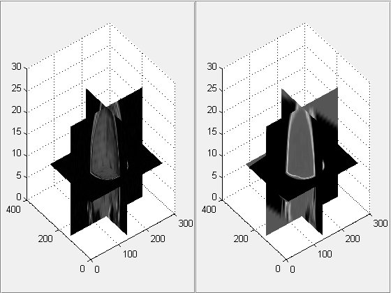

Registering Multimodal 3-D Medical Images
This example shows how you can use imregister, imregtform and imwarp to automatically align two volumetric datasets: a CT image and a T1 weighted MR image collected from the same patient at different times. Unlike some other techniques, imregister and imregtform do not find features or use control points. Intensity-based registration is often well-suited for medical and remotely sensed imagery.
The 3-D CT and MRI datasets used in this example were provided by Dr. Michael Fitzpatrick as part of the The Retrospective Image Registration Evaluation (RIRE) Dataset
Contents
Step 1: Load Images
This example uses two 3-D images of the same patient's head. In registration problems, we consider one image to be the fixed image and the other image to be the moving image. The goal of registration is to align the moving image with the fixed image. In this example, the fixed image is a T1 weighted MRI image. The moving image that we want to register is a CT image. The data is stored in the file format used by the Retrospective Image Registration Evaluation (RIRE) Project. Use multibandread to read the binary files that contain image data. Use the helperReadHeaderRIRE function to obtain the metadata associated with each image. You can use the following link to find more information about the RIRE file format: RIRE data format
fixedHeader = helperReadHeaderRIRE('rirePatient007MRT1.header'); movingHeader = helperReadHeaderRIRE('rirePatient007CT.header'); fixedVolume = multibandread('rirePatient007MRT1.bin',... [fixedHeader.Rows, fixedHeader.Columns, fixedHeader.Slices],... 'int16=>single', 0, 'bsq', 'ieee-be' ); movingVolume = multibandread('rirePatient007CT.bin',... [movingHeader.Rows, movingHeader.Columns, movingHeader.Slices],... 'int16=>single', 0, 'bsq', 'ieee-be' );
The helperVolumeRegistration function is a helper function that is provided to help judge the quality of 3-D registration results. You can interactively rotate the view and both axes will remain in sync.
helperVolumeRegistration(fixedVolume,movingVolume);
You can also use imshowpair to look at single planes from the fixed and moving volumes to get a sense of the overall alignment of the volumes. In the overlapping image from imshowpair, gray areas correspond to areas that have similar intensities, while magenta and green areas show places where one image is brighter than the other. Use imshowpair to observe the misregistration of the image volumes along an axial slice taken through the center of each volume.
centerFixed = size(fixedVolume)/2;
centerMoving = size(movingVolume)/2;
figure, title('Unregistered Axial slice');
imshowpair(movingVolume(:,:,centerMoving(3)), fixedVolume(:,:,centerFixed(3)));
 Step 2: Set up the Initial Registration
The imregconfig function makes it easy to pick the correct optimizer and metric configuration to use with imregister. These two images are from two different modalities, MRI and CT, so the 'multimodal' option is appropriate.
[optimizer,metric] = imregconfig('multimodal');
The algorithm used by imregister will converge to better results more quickly when spatial referencing information about the resolution and/or location of the input imagery is specified. In this case, the resolution of the CT and MRI datasets is defined in the image metadata. Use this metadata to construct imref3d spatial referencing objects that we will pass as input arguments for registration.
Rfixed = imref3d(size(fixedVolume),fixedHeader.PixelSize(2),fixedHeader.PixelSize(1),fixedHeader.SliceThickness); Rmoving = imref3d(size(movingVolume),movingHeader.PixelSize(2),movingHeader.PixelSize(1),movingHeader.SliceThickness);
The properties of the spatial referencing objects define where the associated image volumes are in the world coordinate system and what the pixel extent in each dimension is. The XWorldLimits property of Rmoving defines the position of the moving volume in the X dimension. The PixelExtentInWorld property defines the size of each pixel in world units in the X dimension (along columns). The moving volume extends from 0.3269 to 334.97 in the world X coordinate system and each pixel has an extent of 0.6536mm. Units are in millimeters because the header information used to construct the spatial referencing was in millimeters. The ImageExtentInWorldX property determines the full extent in world units of the moving image volume in world units.
Rmoving.XWorldLimits Rmoving.PixelExtentInWorldX Rmoving.ImageExtentInWorldX
ans =
0.3268 334.9674
ans =
0.6536
ans =
334.6406
The misalignment between the two volumes includes translation, scaling, and rotation. Use a similarity transformation to register the images.
Start by using imregister to obtain a registered output image volume that you can view and observe directly to access the quality of registration results.
movingRegisteredVolume = imregister(movingVolume,Rmoving, fixedVolume,Rfixed, 'rigid', optimizer, metric);
Use imshowpair again and repeat the process of examining the alignment of an axial slice taken through the center of the registered volumes to get a sense of how successful the registration is.
figure, title('Axial slice of registered volume.');
imshowpair(movingRegisteredVolume(:,:,centerFixed(3)), fixedVolume(:,:,centerFixed(3)));
 From the axial slice above, it looks like the registration was successsful. Use helperVolumeRegistration again to view registered volume to continue judging success of registration.
helperVolumeRegistration(fixedVolume,movingRegisteredVolume);
Step 3: Get 3-D Geometric Transformation That Aligns Moving With Fixed.
The imregtform function can be used when you are interested in the geometric transformation estimate that is used by imregister to form the registered output image. imregtform uses the same algorithm as imregister and takes the same input arguments as imregister. Since visual inspection of the resulting volume from imregister indicated that the registration was successful, you can call imregtform with the same input arguments to get the geometric transformation associated with this registration result.
geomtform = imregtform(movingVolume,Rmoving, fixedVolume,Rfixed, 'rigid', optimizer, metric)
geomtform =
affine3d with properties:
T: [4x4 double]
Dimensionality: 3
The result of imregtform is a geometric transformation object. This object includes a property, T, that defines the 3-D affine transformation matrix.
geomtform.T
ans =
0.9614 0.1149 -0.2501 0
-0.1296 0.9906 -0.0430 0
0.2428 0.0738 0.9673 0
11.0283 -42.3593 42.6701 1.0000
The transformPointsForward method of the geometric transformation can be used to determine where a point [u,v,w] in the moving image maps as a result of the registration. Because spatially referenced inputs were specified to imregtform, the geometric transformation maps points in the world coordinate system from moving to fixed. The transformPointsForward method is used below to determine the transformed location of the center of the moving image in the world coordinate system.
centerXWorld = mean(Rmoving.XWorldLimits); centerYWorld = mean(Rmoving.YWorldLimits); centerZWorld = mean(Rmoving.ZWorldLimits); [xWorld,yWorld,zWorld] = transformPointsForward(geomtform,centerXWorld,centerYWorld,centerZWorld);
You can use the worldToSubscript method of Rfixed to determine the the element of the fixed volume that aligns with the center of the moving volume.
[r,c,p] = worldToSubscript(Rfixed,xWorld,yWorld,zWorld)
r =
118
c =
132
p =
12
Step 4: Apply Geometric Transformation Estimate To Moving Image Volume.
The imwarp function can be used to apply the geometric transformation estimate from imregtform to a 3-D volume. The 'OutputView' Name/Value is used to define a spatial referencing argument that determines the world limits and resolution of the output resampled image. You can produce the same results given by imregister by using the spatial referencing object associated with the fixed image. This creates an output volume in which the world limits and resolution of the fixed and moving image are the same. Once the world limits and resolution of both volumes are the same, there is pixel to pixel correspondence between each sample of the moving and fixed volumes.
movingRegisteredVolume = imwarp(movingVolume,Rmoving,geomtform,'bicubic','OutputView',Rfixed);
Use imshowpair again to view an axial slice through the center of the registered volume produced by imwarp.
figure, title('Axial slice of registered volume.');
imshowpair(movingRegisteredVolume(:,:,centerFixed(3)), fixedVolume(:,:,centerFixed(3)));